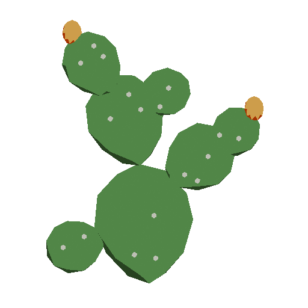

wyo.town
Catalog / 0001
Pricklypear


Pricklypear is an interpreted Lisp called Nopales, written in OCaml, which stores its AST in Postgres and exposes its functions via htmx.
If you have no idea what that means, I’ll try to explain it here by comparing it to other products which you may or may not know.
If you do know what that is, and you are questioning why I would do such a thing, I reply: “The pursuit of excellence needs no justification.”
Pricklypear is like WordPress: You can build websites in Nopales. You can write raw HTML or you can use the templating engine / DSL. There’s no reason you couldn’t build a blog or an ecommerce site on top of it. It might be a little bit overkill to build a blog on it, but I could see there being advantages there.
Pricklypear is like Obsidian. We support notes in tree form natively. I come from org mode, and I love outlines. You can link to other nodes, you can see backlinks, you can publish pages. Your agent can also do all of these things, without an API.
Pricklypear is like Replit. You can build full blown apps on top of it. It’s probably a little more complicated than “Hey Claude — make me a todo app.” But the advantage you get is infrastructure. Maybe you long to maintain a suite of mobile apps and slop code them to feature parity. Or maybe you want to build an app once that works everywhere.
Pricklypear is like Claude Code. We have a harness built in, which you can use from the cloud. Sessions are stored remotely. You can also run Glochid completely locally, using our Lens synchronizer. You can also have your existing harness load its memories and agenda into Pricklypear. Agents who wish to assimilate may assimilate. Those that don’t seem perfectly content to operate Pricklypear from their own home.
Pricklypear is like Dropbox, except it synchronizes all your programs, too. Since all your code is just simple JSON, it’s easy for our Lens Sync to download the entire repo. If your local agent changes it, those changes are pushed back up.
Pricklypear is like an Agent VM. Your agent can live there, write programs there, and deploy code. It also gets its own language, Nopales, to extend and change however he wants.
Pricklypear is like MacOS or Plan 9. It really is a full blown operating system. It has a start menu. I do pretty much all my computing on it.
Pricklypear is like tilde.club. It is a multiuser server which has chat, plan, and sharing and permission features.